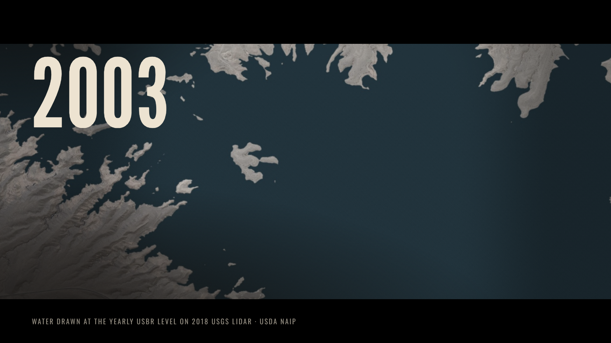
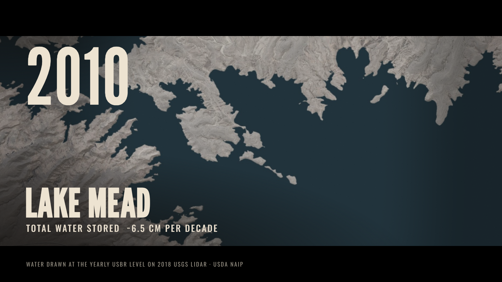
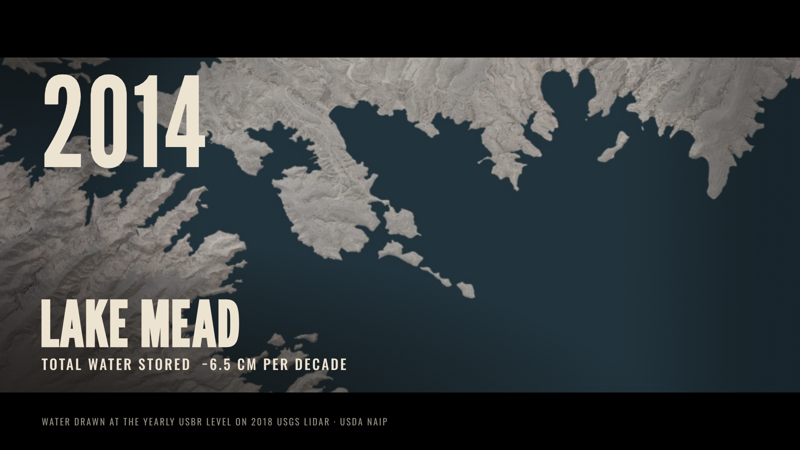
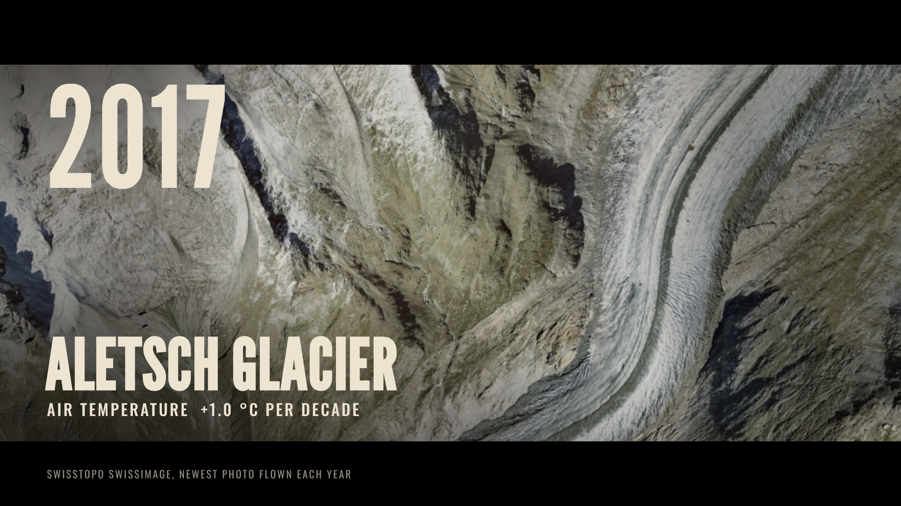
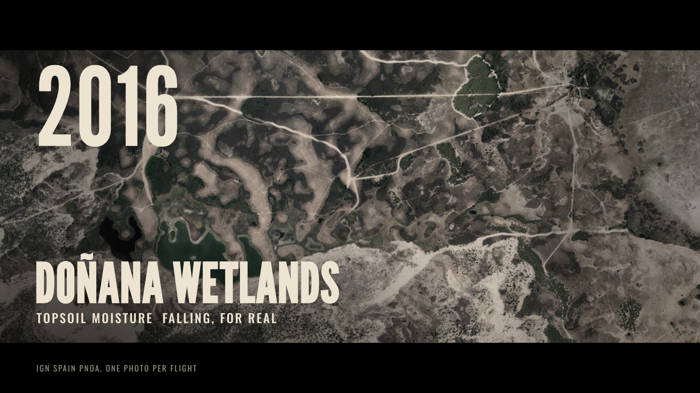
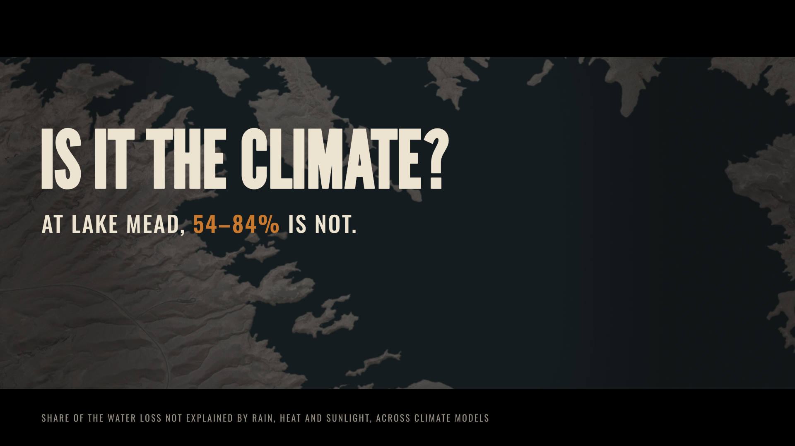
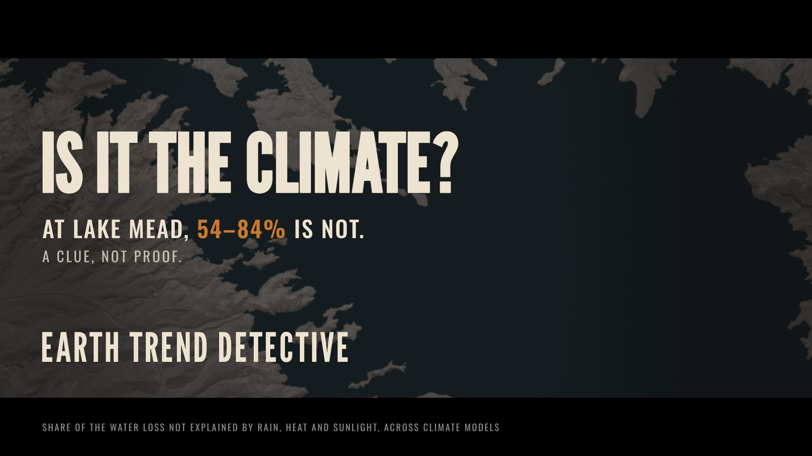

Real aerial imagery year by year, bronze high-contrast grade, 2.39:1 letterbox. Every figure from site.json. The website loop is 0–24.5 s with the text off.

Open on the drum hit with 2003 slammed on screen; years tick every 0.6 s while the camera pushes in.

LAKE MEAD lands; the shoreline pulls back and islands emerge as the USBR level falls.

The figure lands and holds; hard cut on the next hit.

19 swisstopo photos, 2003→2024, 0.4 s each; +1.0 °C per decade.

8 PNOA flights, 2004→2022; topsoil moisture falling, for real.

Riser into the question; 54–84% in ember, then "A clue, not proof."

Wordmark lands and holds 2.2 s; music out on 30.0.